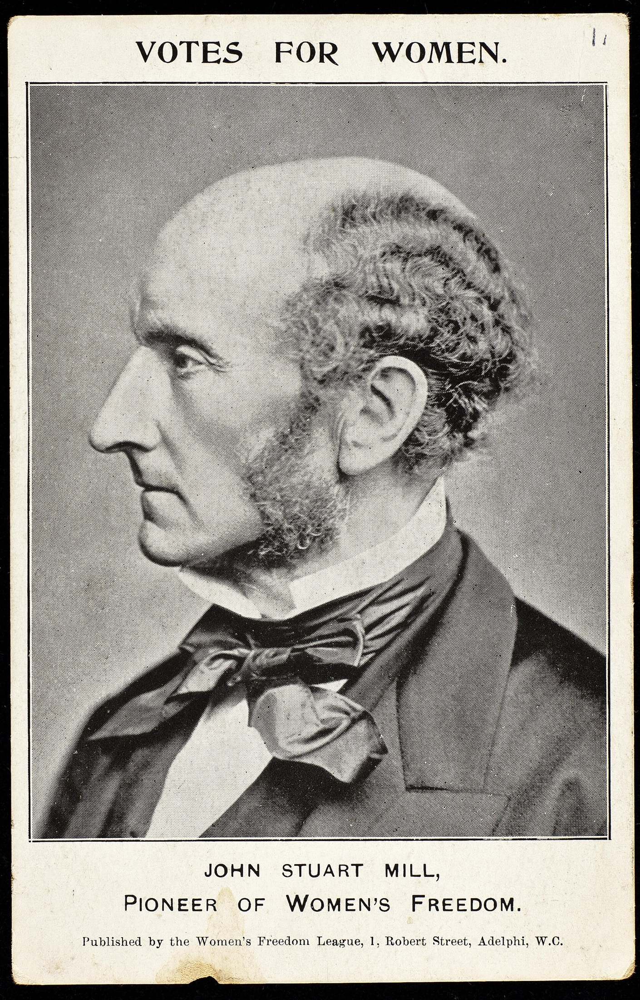

Tema 13 · El utilitarismo
Para entrar en el utilitarismo
Con Kant se cerró la Edad Moderna, y con él se alza también la cumbre de la ética del deber (§51). Pero apenas un paso más allá, ya en el siglo XIX, esa ética encontró un rival de su misma talla: una moral que no mide el valor de los actos por la intención ni por el deber, sino por la felicidad que producen. Es el utilitarismo, la corriente que este tema estudia. Antes de entrar en ella conviene levantar un mapa —el de las dos grandes familias en que puede ordenarse casi toda la reflexión moral (§52)—, porque solo sobre ese fondo se aprecia lo que el utilitarismo tiene de novedoso: el modo en que toma algo de cada familia sin encajar del todo en ninguna. Después lo estudiaremos en sus dos autores mayores, Bentham y Mill (§53).
§52 · Éticas de la felicidad y éticas del deber
Dos maneras de medir una acción. A lo largo de su historia, la ética ha respondido de dos modos muy distintos a la pregunta «¿qué debo hacer?». Para unas teorías, lo que decide si una acción es buena es el fin al que tiende: la felicidad, el bien que persigue o produce. Para otras, lo que la decide es la forma del deber: la obligación de obrar de cierto modo, con independencia del fin que se busque. El propio Kant, al exponer su moral, había bautizado esta diferencia: llamó materiales a las éticas del primer tipo —las que parten de un fin concreto— y formal a la suya (§51). Recojamos ese hilo y ampliémoslo, porque bajo los nombres de éticas de la felicidad y éticas del deber se ordena buena parte de lo que hemos visto.
Las éticas de la felicidad. Son las más antiguas. Toda la ética griega gira en torno a la felicidad como fin último de la vida. En su forma clásica, el eudaimonismo de Sócrates (§07) y, sobre todo, de Aristóteles (§18), la felicidad —la eudaimonía— es el florecimiento o la vida lograda, y la acción correcta es la que conduce a ella: la virtud se cultiva porque hace feliz a quien la posee. Ahora bien, «felicidad» admite contenidos distintos. Para el eudaimonismo es la actividad del alma conforme a la virtud y a la razón; para el hedonismo de Epicuro (§21) es el placer bien entendido, la serena ausencia de dolor. Son contenidos diferentes, pero comparten la misma manera de razonar: primero se fija el bien o el fin, y de él se deduce la norma. Por eso a estas éticas se las llama también teleológicas1.
Las éticas del deber. Frente a esa tradición, Kant invirtió el orden (§51). El valor moral de una acción no está en el fin que persigue —la felicidad es deseable, pero no es lo que hace buena a una acción—, sino en la forma del deber: obrar por respeto a una ley universal, con independencia de las consecuencias y aun en contra de la propia inclinación. Ya no «si quieres ser feliz, haz esto», sino «debes, sin condiciones». A estas éticas se las llama deontológicas2. Su criterio no es el bien que se obtiene, sino la rectitud de la intención con que se obra.
El eje de la disputa. Reducida a lo esencial, la diferencia se deja enunciar en una sola pregunta: ¿qué hace que una acción sea moralmente correcta? Y hay dos respuestas incompatibles. Para las éticas de la felicidad, sus consecuencias: una acción vale por el bien que produce. Para las éticas del deber, su intención: una acción vale por el motivo desde el que se obra, aunque el resultado se malogre. Esta es la dicotomía que organiza buena parte de la ética y, como veremos, uno de los contrastes más fecundos para pensar por cuenta propia.
El utilitarismo: un caso a caballo. Aquí entra la corriente que da nombre al tema. A primera vista, el utilitarismo que nace en el siglo XIX es sin más una ética de la felicidad: su criterio es la felicidad, y hereda el hilo hedonista de Epicuro (§21), pues identifica el bien con el placer. Y, sin embargo, introduce dos giros que lo acercan a las éticas del deber. El primero: la felicidad que cuenta no es la del agente, sino la de todos los afectados, sumada e imparcial —nadie cuenta más que nadie—. El segundo: de ahí extrae una ley universal —«procura la mayor felicidad para el mayor número»— que se impone con la fuerza incondicional de un mandato. Es, pues, una ética material en su criterio (el placer, la felicidad) pero universalista en su forma, propia del deber. Por eso tensa la dicotomía y merece tratarse aparte; y por eso fue el gran rival de la ética kantiana en el siglo XIX. A él dedicamos la sección que sigue (§53).
§53 · El utilitarismo: Bentham y Mill
El consecuencialismo. Cuando juzgamos si una acción es correcta, damos un peso enorme a sus consecuencias, porque sabemos que las buenas intenciones no garantizan los buenos resultados: quien quiere socorrer a un herido pero lo mueve sin saber puede agravar la lesión. Las éticas consecuencialistas llevan esa intuición hasta el final y sostienen que la moralidad de un acto se establece exclusivamente por un análisis de sus consecuencias: una acción es correcta si sus consecuencias son más favorables que desfavorables. Esta perspectiva tiene una ventaja clara sobre la ética kantiana: las consecuencias se ven y se comprueban, mientras que las intenciones quedan ocultas; podemos, pues, aprender de la experiencia qué acciones son buenas, en vez de depender de listas de deberes. Hay tres variantes, según de quién se cuenten los beneficios: el egoísmo ético, que solo atiende a las consecuencias para el agente; el altruismo ético, que atiende a las de todos menos el agente; y el utilitarismo, que las cuenta para todos sin excepción, el propio agente incluido. El utilitarismo es, por tanto, la versión imparcial del consecuencialismo.
El principio de utilidad. Jeremy Bentham (1748-1832), jurista y reformador inglés, fue el primero en articular una teoría utilitarista completa. Su núcleo es el principio de utilidad, o principio de la mayor felicidad: una acción —y también una ley o una institución— es correcta en la medida en que tiende a producir la mayor felicidad para el mayor número de personas. Bentham no concibió el principio como una abstracción, sino como una vara para reformar el derecho, las cárceles y la política de su tiempo: lo que no aumenta la felicidad general no merece conservarse.

El cálculo hedónico. ¿En qué consiste esa felicidad? Para Bentham, en el placer y en la ausencia de dolor: son las únicas consecuencias que cuentan a la hora de juzgar una conducta. Su utilitarismo es por eso hedónico3. Y como solo importan placer y dolor, la moral se vuelve casi una aritmética: Bentham propuso un cálculo felicífico que mide y suma los placeres y los dolores que una acción produce, atendiendo a su intensidad, su duración, su certeza o su proximidad. La acción correcta es la que arroja el mayor saldo de placer sobre dolor. En esta contabilidad todos los placeres son iguales en naturaleza y solo difieren en cantidad; de ahí su provocación famosa: a igualdad de placer, un simple juego de niños vale tanto como la poesía. Es un utilitarismo cuantitativo.
Utilitarismo del acto y de la norma. Bentham aplicaba el cálculo a cada acto concreto: es el utilitarismo del acto, que juzga las acciones una a una por sus consecuencias. Pero este planteamiento tropieza con dificultades. Llevado al extremo, convertiría en reprobable cualquier rato de ocio, porque la sociedad no se beneficia de que yo pase la tarde viendo películas en lugar de hacer obras de caridad; y, más grave aún, abriría la puerta a justificar la tortura o la esclavitud de unos pocos si reportaran un beneficio neto a la mayoría. ¿Es lícito torturar a un sospechoso para que revele dónde escondió una bomba y salvar así a sus víctimas? Para el utilitarismo del acto, sí. Frente a estas consecuencias surge el utilitarismo de la norma: en lugar de juzgar cada acto por separado, se juzga la regla. Una norma de comportamiento es correcta si las consecuencias de adoptarla son, para todos, mejores que las de rechazarla. Así, «no torturarás» o «no robarás» se sostienen como reglas aunque algún caso aislado pareciera aconsejar lo contrario, porque una sociedad que admitiera la tortura o el robo viviría peor. Es una distinción interna del utilitarismo, no una alternativa a él.
Mill: la calidad de los placeres. John Stuart Mill (1806-1873), educado desde la infancia en la doctrina de Bentham, la heredó y la refinó en el punto más débil. Medir solo la cantidad de placer, objetó, rebaja la moral hasta volverla, en palabras de sus críticos, una «doctrina digna de cerdos». Mill replica que los placeres difieren no solo en cantidad, sino en calidad. Hay placeres superiores —los del intelecto, los sentimientos, la imaginación, el sentido moral— y placeres inferiores —los del cuerpo—, y los primeros valen más por su clase, no por su intensidad. La prueba está en que quien ha conocido ambos prefiere los superiores aunque vengan acompañados de menos satisfacción. De ahí su sentencia célebre: «es mejor ser un Sócrates insatisfecho que un necio satisfecho». Con este giro cualitativo, la felicidad que el utilitarismo persigue deja de ser el placer sin más para ser la felicidad digna de un ser humano. Mill llevó además el principio al terreno político: en Sobre la libertad (1859) sostuvo que el Estado solo puede limitar la libertad del individuo para evitar el daño a los demás, nunca para imponerle su propio bien, en uno de los textos fundadores del liberalismo.

Las críticas. El utilitarismo es una de las éticas más influyentes que se han pensado —pocas teorías han transformado tanto el derecho, la política y la economía—, pero ha recibido objeciones de fondo. Conviene retener tres:
- Sacrifica la justicia y los derechos. Al buscar el mayor bien agregado, el utilitarismo puede justificar que se sacrifique a un inocente cuando con ello gana la mayoría: castigar a quien se sabe inocente para calmar a una multitud, torturar a un sospechoso, esclavizar a unos pocos en beneficio de muchos. Lo que para Kant era intocable —la dignidad de la persona, que nunca debe tratarse como mero medio (§51)— el utilitarismo lo pone en la balanza.
- Es excesivamente exigente y difícil de aplicar. Si cada acción debe producir la mayor felicidad posible, casi todo lo que hacemos por gusto propio resultaría reprobable; y, además, nadie puede prever con seguridad todas las consecuencias de un acto ni sumar de veras los placeres y dolores ajenos. El cálculo perfecto es, en la práctica, impracticable.
- Reduce el bien al placer. No todo lo que tenemos por bueno es placentero: cultivar una amistad o mantener una promesa exige a veces renuncia y esfuerzo. El propio Mill se vio empujado a corregir el hedonismo de Bentham precisamente por esta grieta4.
Dos éticas frente a frente. Conviene recoger en un cuadro el contraste con Kant, porque la ética del deber (§51) y el utilitarismo son el ejemplo más nítido de dos respuestas incompatibles a la pregunta moral, y por eso uno de los pares más rentables para una disertación.
| Ética del deber (Kant, §51) | Utilitarismo (Bentham, Mill) | |
|---|---|---|
| Criterio moral | La forma del deber: una ley universal | Las consecuencias: la mayor felicidad para el mayor número |
| Qué cuenta | La intención: obrar por deber | El resultado: el placer y el dolor producidos |
| Su fuerza | Protege la dignidad de la persona y fija derechos inviolables | Atiende al bienestar real de todos; criterio comprobable y flexible |
| Su debilidad | Rígida: puede ignorar consecuencias desastrosas | Puede sacrificar al individuo por la mayoría; el cálculo es impracticable |
Más allá de la ética. Estas dos perspectivas —la del deber y la de la felicidad, la deontológica y la consecuencialista— no se dejan reconciliar fácilmente, y justamente por eso obligan a tomar partido y a razonar (§51). El utilitarismo, además, no fue solo una teoría moral: su confianza en el cálculo, en la utilidad y en la reforma alimentó el liberalismo político y económico cuya genealogía ya recorrimos (§46). El siglo XIX que aquí se abre llevará la crítica todavía más lejos: con Marx y con Nietzsche se pondrá en cuestión no ya el criterio de la moral, sino la confianza misma en la razón que Kant y los utilitaristas, por encima de sus diferencias, compartían.
Télos significa «fin» o «meta» en griego.↩︎
Déon significa en griego «lo que es debido», el deber.↩︎
Hēdonḗ significa «placer» en griego.↩︎
Ante la misma objeción, otros utilitaristas ampliaron el criterio más allá del placer: George Edward Moore (1873-1958) propuso un utilitarismo ideal, que cuenta como buena cualquier consecuencia reconocida como valiosa, sea o no placentera; y R. M. Hare (1919-2002), un utilitarismo de la preferencia, que atiende a la satisfacción de las preferencias de cada cual.↩︎